Evidence-Based Monitoring and Evaluation for Green Education sunumunda son tur revizeler, önce ve sonra görüntüleriyle.
13 → 12SLAYT
5İSTENEN REVİZE
3TESLİM DOSYASI
1100th slaytında “Green” yerine “Greening”
2Son soru slaytı tamamen kaldırıldı
3İlk açılıştaki beyaz boş ekran kaldırıldı
4Slayt numaralarındaki kayma düzeltildi
5Köprü slaytı tablette de görünüyor
Hepsi PowerPoint (animasyonlu ve statik) ve tarayıcı sürümünde birlikte uygulandı.
Revizeler
1
100th slaytı
“Green” → “Greening”
Başlık hapı artık ortaklığın resmî adını taşıyor: Greening Education Partnership. Sağdaki başlık ve açıklamayla da tutarlı.
Önce v9
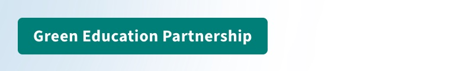
Sonra v10
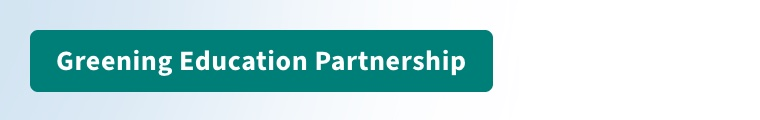
Sol sütundaki “Empowering All Learners to Go Green” mottosu kesinleşmiş metin olduğu için değişmedi.
2
Kapanıştan önceki slayt
Soru slaytı kaldırıldı
“Prospective Questions for Country Representatives” slaytı sunumdan, PowerPoint dosyalarından ve sunucu notlarından tamamen çıkarıldı. Dijital Eğitim Ekosistemi slaytından doğrudan Teşekkür slaytına geçiliyor.
Kaldırılan v9 · 12. slayt
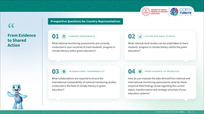
12SLAYT KALDI
3
Kapak
Açılışta beyaz ekran yok
Sunum açılır açılmaz kapak görseli ekranda. Önceden PowerPoint’te 1. slayt ve tarayıcı sürümü kapak belirmeden önce bir an bembeyaz başlıyordu.
Önce ilk kare
Boş beyaz ekran
Sonra ilk kare
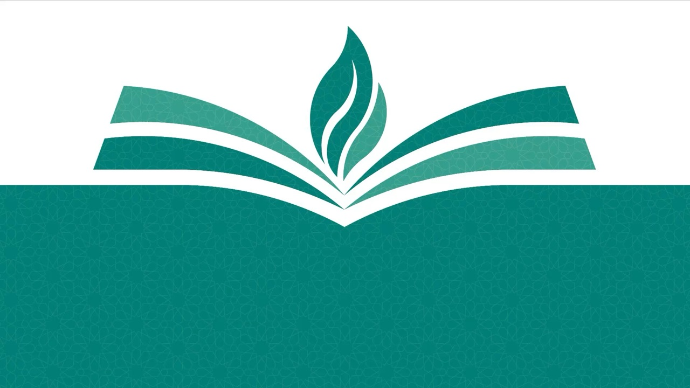
Görüntüler PowerPoint sürümündeki 1. slayt videosunun ilk karesidir.
4
Alt banttaki gösterge
Numaralar 01’den başlıyor
Gösterge konumunda oynama yoktu; kayma numaralamadaydı. Kapak ve Antalya da sayıldığı için ilk içerik slaytı “03” ile başlıyordu. Artık yalnız numara gösteren içerik slaytları sayılıyor.
İlk içerik slaytı
v9
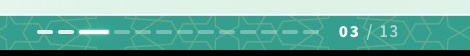
v10
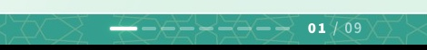
Son içerik slaytı
v9
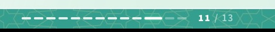
v10
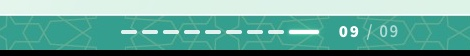
Takip barında da artık 9 dilim var; kapak, Antalya ve Teşekkür slaytlarında gösterge görünmüyor.
5
Köprü slaytı
Köprü tablette boş görünüyordu
Köprünün parçaları (iki ayak, kiriş, ölçü çizgisi) yalnızca giriş animasyonu oynayınca görünür hâle geliyordu. Bazı tablet tarayıcıları bu animasyonu oynatmayınca köprü hiç çizilmiyordu. Parçalar her tarayıcıda çalışan bir yapıya taşındı: animasyon hiç oynamasa da köprü artık eksiksiz görünüyor.
Önce v9 · animasyon oynamayan tarayıcı
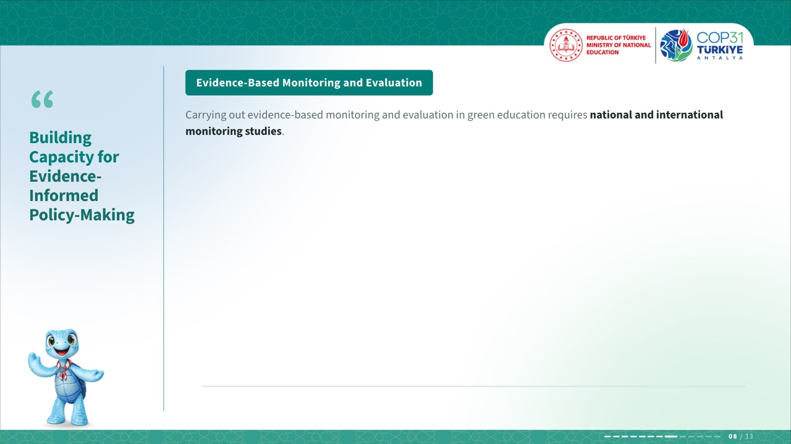
Köprü alanı boş
Sonra v10 · aynı koşul
Köprü eksiksiz
Nasıl sınandıİki sürüm de bütün animasyonlar kapatılarak açıldı; tabletteki durum böylece masaüstünde yeniden üretildi.
Ek bulguAynı hata yüzünden v9 statik PPTX’te köprü yarım kalmıştı: ikinci ayak aşağıda, kiriş havada. v10’da düzeldi.
Önce v9 statik PPTX
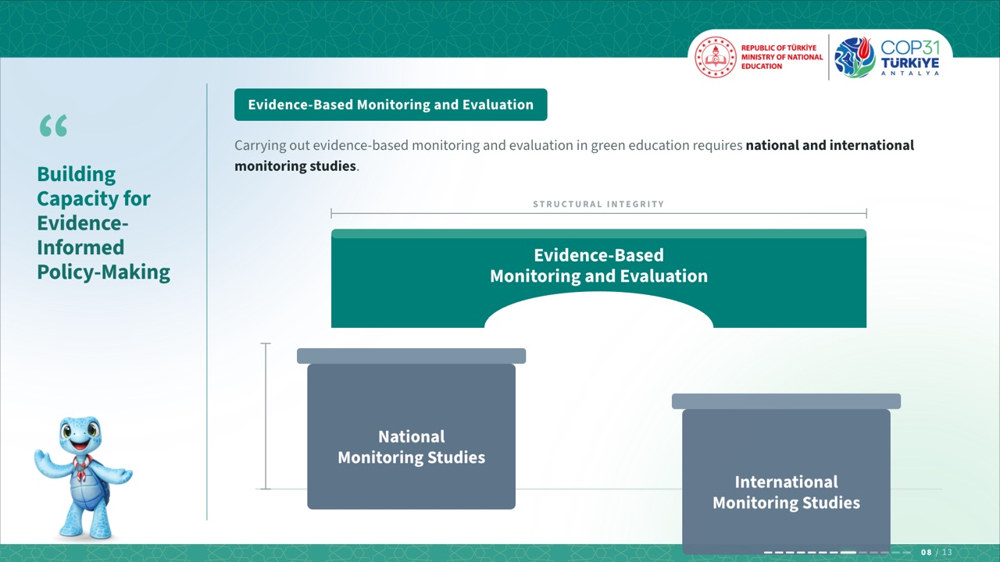
Yarım kurulmuş
Sonra v10 statik PPTX
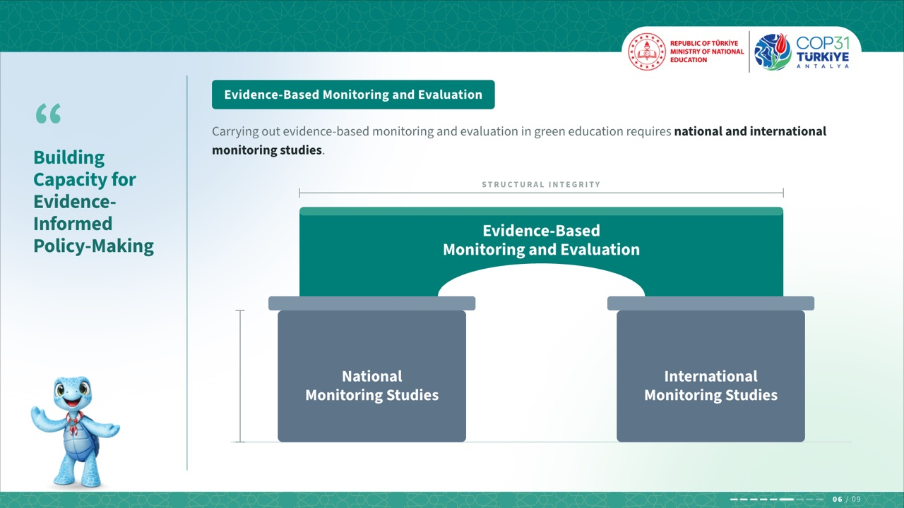
Tam
Yeni akış · 12 slayt
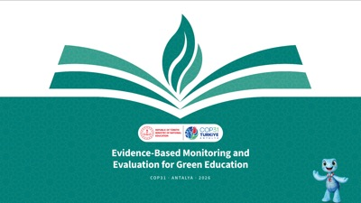
1 · Kapak numarasız
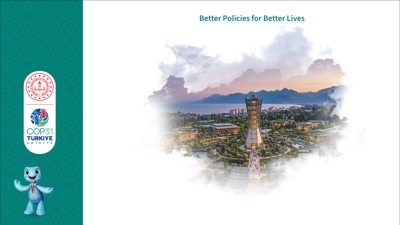
2 · Antalya numarasız
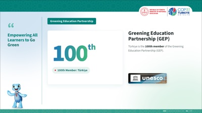
3 · 100th 01
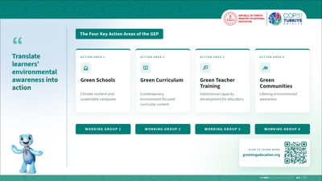
4 · Dört alan 02
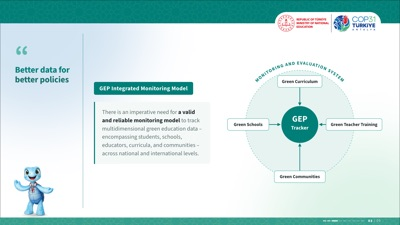
5 · Model 03
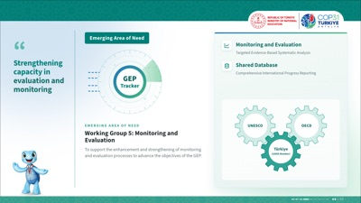
6 · Çalışma Grubu 5 04
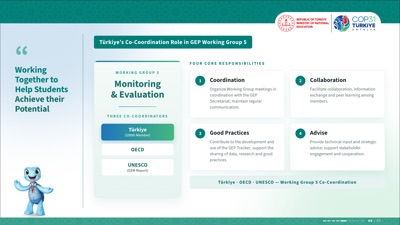
7 · Koordinasyon 05
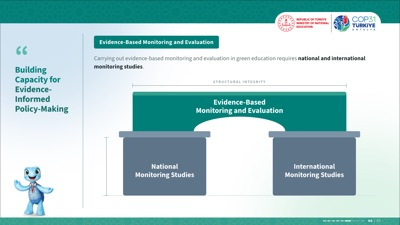
8 · Köprü 06
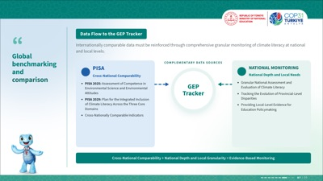
9 · Veri akışı 07
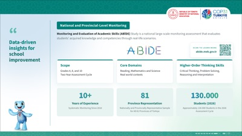
10 · ABİDE 08
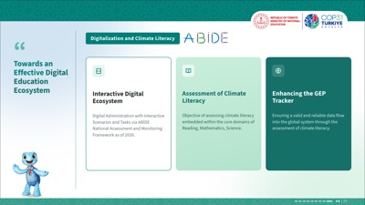
11 · Dijital ekosistem 09
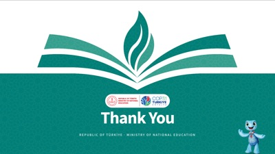
12 · Teşekkür numarasız
Teslim ve doğrulama
v10 dosyaları
Dosya
Boyut
MEB_COP31_Sunum_Sablon_Video_v10.pptxPowerPoint, animasyonlu. Her slayt tarayıcı sürümünden kaydedilmiş videodur; her tıklama sonraki slayta geçer.
107 MB
MEB_COP31_Sunum_Sablon_v10.pptxPowerPoint, statik yedek. Her slayt tek resim; QR kodları tıklanabilir.
10 MB
MEB_COP31_Sunum_Sablon_v10.htmlTarayıcı sürümü. İnternetsiz çalışır; Chrome ya da Edge’de açılıp F ile tam ekran yapılır.
3,4 MB
Neler denetlendi
✓İki PPTX de PowerPoint’te onarım uyarısı olmadan açıldı: 12 slayt.
✓Paketlerde kopuk bağlantı ya da artık dosya yok; medya denetim çubuğu kapalı.
✓Köprü, animasyonlar kapalıyken de eksiksiz çiziliyor.
✓Gösterge her içerik slaytında doğru: 01 / 09 ile 09 / 09 arası.